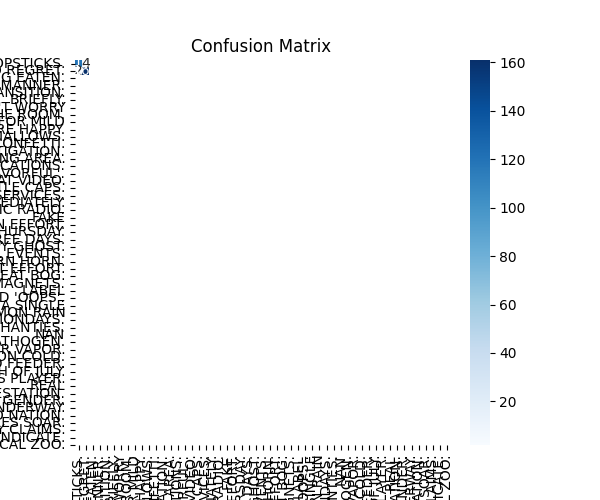
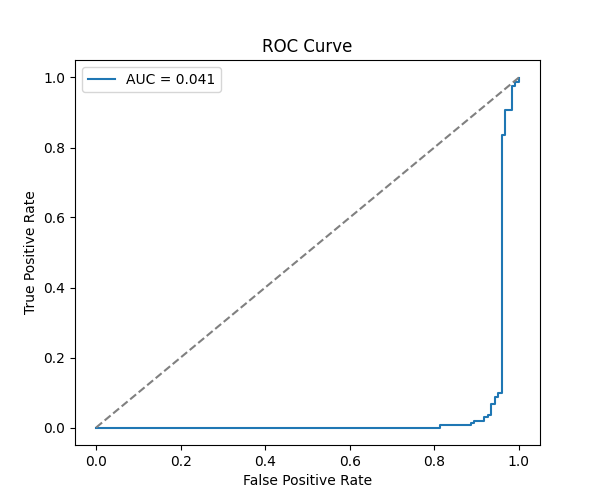
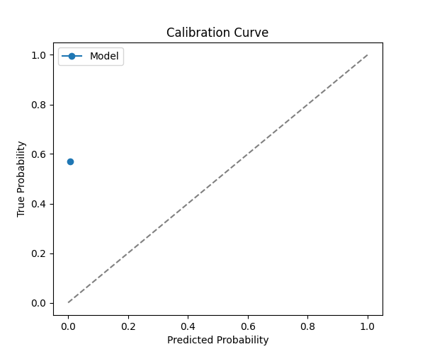
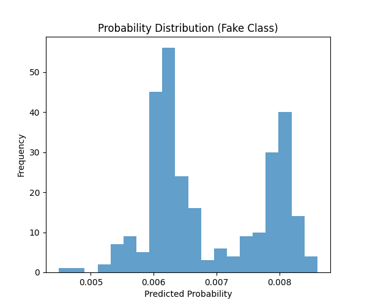

Generated: 2025-11-15 15:54:18
Accuracy: 97.90%
Precision: 0.979
Recall: 0.979
F1 Score: 0.979
AUC: 0.041
precision recall f1-score support
FAKE 0.98 0.97 0.98 123
REAL 0.98 0.99 0.98 163
accuracy 0.98 286
macro avg 0.98 0.98 0.98 286
weighted avg 0.98 0.98 0.98 286




See file: html_report/misclassified_samples.csv
text label Unnamed: 2 Unnamed: 3 75 Drinking eight glasses of orange juice a day will eliminate the need for sleep entirely. FAKE NaN NaN 82 Scientists develop a biodegradable material that completely dissolves after one year of use. REAL NaN NaN 298 Ganesh is a boy. REAL NaN NaN 310 Election Commission arrests candidate using cryptocurrency for vote buying FAKE NaN NaN 331 Police foil plot to disrupt counting center power supply FAKE NaN NaN 342 Students offered free laptops for attending political rallies FAKE NaN NaN